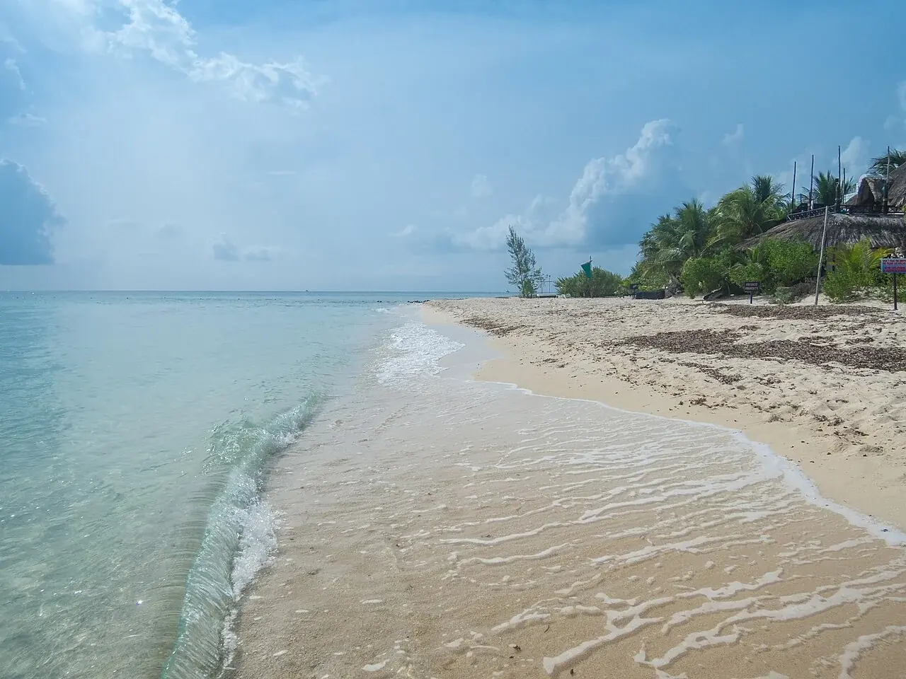

Cozumel
Quintana Roo, Mexique · plongée, snorkeling

Face à Playa del Carmen, cette île mexicaine ouvre sur la mer des Caraïbes. Les centres de plongée y organisent des sorties vers les récifs, avec des sites à choisir selon ton expérience.
- Lieu
- Quintana Roo, Mexique
- Niveau
- Variable selon les conditions
- Activités
- plongée, snorkeling
- Type d'eau
- Mer / océan
- Coordonnées
- 20.45, -86.99 (position approximative du secteur)
Ouvrir dans Ocean Buddy Télécharger sur l'App Store
Source : Wikipédia · géographie du lieu.